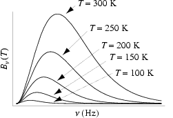
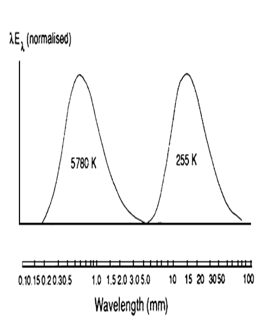
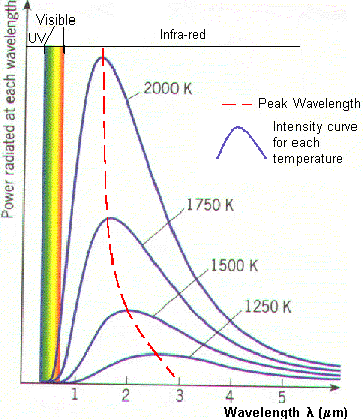
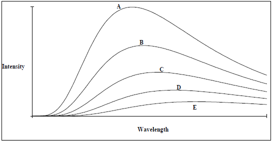

This lab discusses basics of black body radiation with an account on what a black body is, and how this is related to the phenomenon of remote sensing. It also focuses on the physics laws governing the black body radiation. Reading this lab will give idea to the users about the absorption and emission patterns by defined objects and their energy capture and use in remote sensing satellite imagery information understanding.

www.pep.uni-bremen.de/.../al-hazaimay_pres_tech_07_blackbody.ppt
- The black body is importance in thermal radiation theory and practice.
- The ideal black body notion is importance in studying thermal radiation and electromagnetic radiation transfer in all wavelength bands.
- The black body is used as a standard with which the absorption of real bodies is compared.
Definition of a black body
|
A black body is an ideal body which allows the whole of the incident radiation to pass into itself ( without reflecting the energy ) and absorbs within itself this whole incident radiation (without passing on the energy). This propety is valid for radiation corresponding to all wavelengths and to all angels of incidence. Therefore, the black body is an ideal absorber of incident radaition. |

|
A black body is a theoretical object that absorbs 100% of the radiation that hits it. Therefore it reflects no radiation and appears perfectly black.
- Roughly we can say that the stars radiate like blackbody radiators. This is important because it means that we can use the theory for blackbody radiators to infer things about stars.
- At a particular temperature the black body would emit the maximum amount of energy possible for that temperature.
- Blackbody radiation does not depend on the type of object emitting it.
Entire spectrum of blackbody radiation depends on only one parameter, the temperature, T.
http://students.uta.edu/bl/blq6217/public_html/PHYS1445/PPT_nobg/Chapter_IV_nobg.pdf (for following) (for following).
You heat the rod with a propane torch.Rod starts to glow Red hot.
| -Orange | -yellow | -white | -blue |
|

|
|
Ideal blackbody absorbs all of the electromagnetic radiation that strikes it.
Measurement of radiation emitted by a blackbody at several wavelengths
Total amount of radiation emitted. |

|
Planck Law
The Planck Law gives a distribution that peaks at a certain wavelength, the peak shifts to shorter wavelengths for higher temperatures, and the area under the curve grows rapidly with increasing temperature.
http://scienceworld.wolfram.com/physics/PlanckLaw.html
 |
 |
Wein Displacement Law
|
 |
{kind=link}
The Stefan-Boltzmann Law
|
 |
|
 |
{kind=link}
http://www.astro.ufl.edu/~oliver/ast3722/lectures/BasicDetectors/BlackBody.gif
{kind=link}

- This applet plots Planck's Radiation Law curves for arbitrary temperatures in the range 3000-30,000 K, with the temperature for each case selected by the user with the slider at the bottom.
- Temperature can be selected by sliding the bar to the temperature desired and clicking New for each case to be plotted.
- There are two scales of slider movement: large moves by dragging the selector, and 1 degree at a time by clicking the space between the slider selector and slider ends.
- Clear button is used to clear the graph plot.


Q1.
Which bulb’s filament is hottest?
Red
Green
Blue
Same
Q2.
Blue photons have higher energy than red photons
True
False
Q3.
When the temperature of a black body is lowered to half its original value then the amount of heat radiated will be reduced to...
a. 1/2
b. 1/4
c. 1/8
d. 1/16
Q4.
A plot of the continuous spectra of five different stars is shown in the figure below. Based on these spectra, which of the stars has the lowest temperature?
|
a. Star A b. Star E c. Difficult to say d. Depends on weather |
 |
Q5.
At what wavelength would a star radiate the greatest amount of energy if the star has a surface temperature of 6000 K?
a. 5 nm
b. 500 nm
c. 300 m
d. 1.8×107 m
Q6.
Black body radiation is the emission of light from metal surfaces.
True
False
Q7.
Use Wein's Law to find the peak radiation for a star whose surface temperature is 2,900 K. In what form of energy would this peak fall?
a. 100, 000 nm in the microwaves
b. 1,000 nm in the near infrared
c. 100 nm in the ultraviolet
d. 100 nm in the X-rays
Q8.
In what wavelength range does most of the solar radiation fall?
a. Ultraviolet
b. visible
c. infrared
d. radio
Q9.
For a body with a surface temperature close to 27oC, at what wavelength would the thermal spectrum reach a maximum?
a. 10 µm
b. 100 µm
c. 10 mm
d. 100 mm
Q10.
As a glowing black body gets cooler, what happens to its color and what happens to the brightness of the light it emits?
a. Color gets more blue; doesn't change brightness.
b. Color gets more blue; emits more light.
c. Color gets more red; emits more light.
d. Color gets more red; emits less light
Q11.
The wavelength at which the maximum energy is radiated from a black body is
a. Inversely proportional to temperature ($\lambda_{max} = const/T$).
b. Directly proportional to temperature ($\lambda_{max} = const * T$)
c. Directly proportional to the fourth power of temperature ($\lambda_{max} = const * T^4$).
d. Independent of the temperature
Q12.
A black body emits an amount of radiation from each unit area of its surface that is proportional to
a. the inverse square of its absolute temperature.
b. the cube of its temperature divided by the mass.
c. the fourth power of its absolute temperature.
d. the fourth power of the wavelength

Please provide feedback for the experiment.